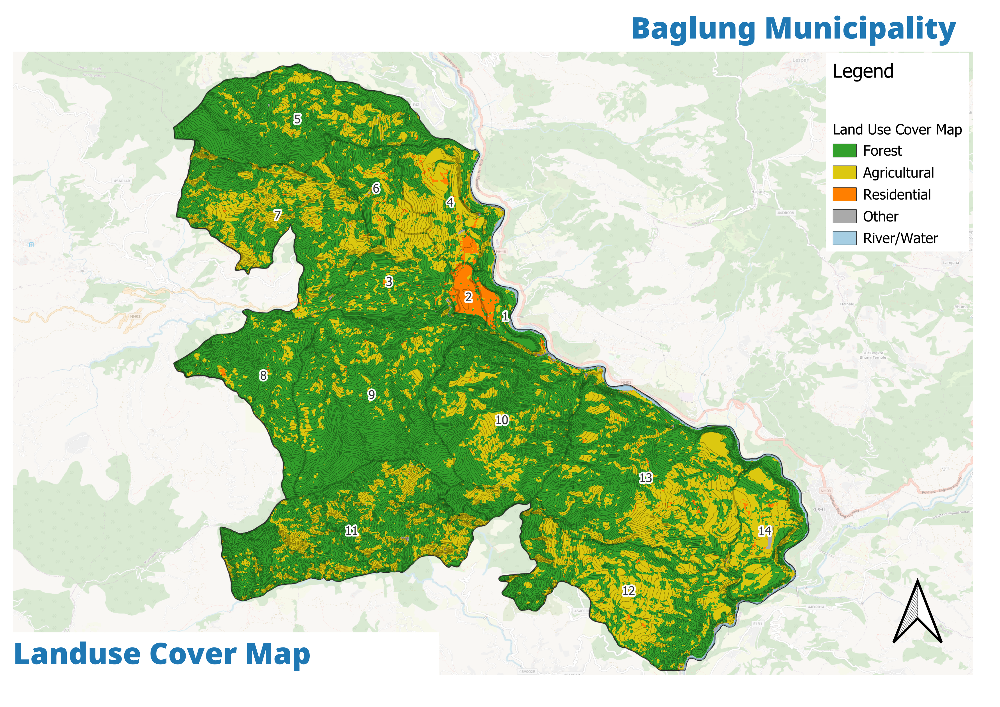
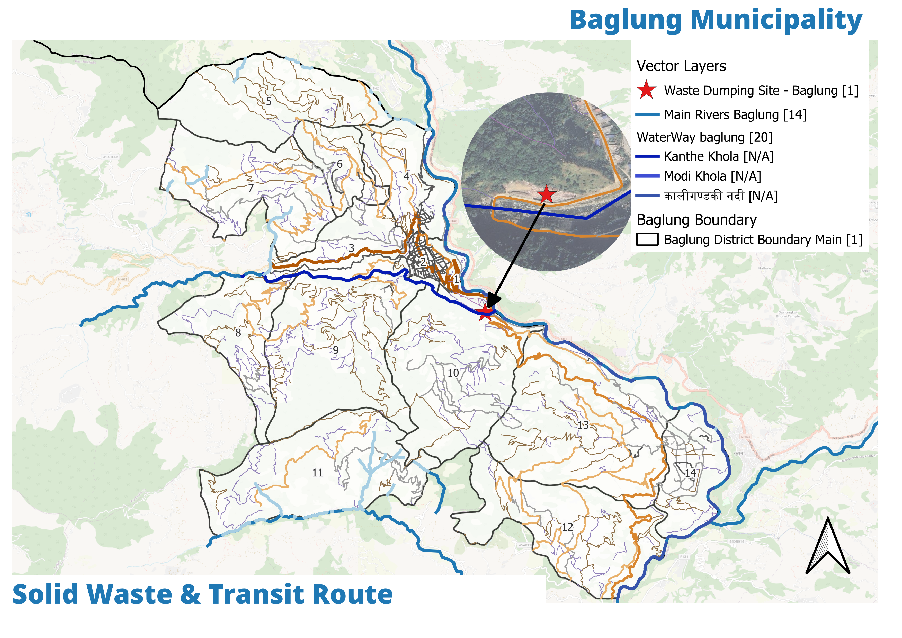
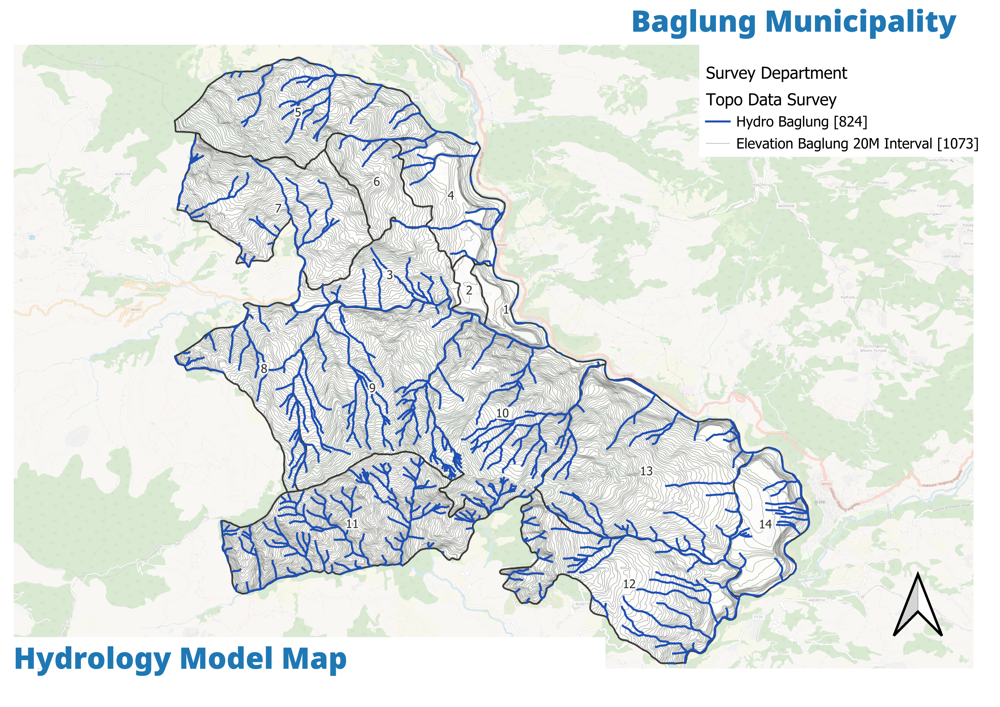

Half of Baglung is forest but only six wards get collection. The plan scales the zero-waste 3-bin model to all 14 wards, protects the 3,215 Ha green belt (Malika forest 180 Ha), and sites one proper landfill — not the current open dump.
Baglung's environmental asset is its green belt — 3,215 Ha — but collection reaches only six of 14 wards, the landfill is an open dump, and the flagship zero-waste 3-bin model started by ALK Eco stays a pilot.



| Problem | Evidence | Plan response |
|---|---|---|
| Collection reaches 6 of 14 wards | 8 wards with no service | Scale 3-bin zero-waste across all wards |
| Open-dump landfill | No engineered site | Site new landfill to 5 criteria |
| Forest loss pressure | 180 Ha Malika + 3,215 Ha belt | Reverse net forest loss in core |
| Water & climate stress | Springs at seasonal low | Conservation strategy + DRR interface |
Source: For addition Ch5.3 (3-bin + ALK Eco + landfill criteria 5.3.7); v3 Ch5 environment.
The recommended landfill site is chosen against a unique five-criteria gate — a rare explicit siting method in the source documents.
| Criteria | Standard |
|---|---|
| Distance from river | ≥ 100 m |
| Distance from road | ≥ 30 m |
| Distance from settlement | ≥ 500 m |
| Slope | < 10% |
| Soil type | Humic Acrisol preferred |
Source: For addition Ch5.3.7 — criteria unique to this sector. The suitability raster (see Physical) complements the siting with slope/fault/flood screening.
Same grading as physical and social: four alternatives across eight criteria. Zero-waste only fixes the bin; forest-only fixes the tree — integrated fixes the system.
| Alternative | Score (8 criteria ×3) | Verdict |
|---|---|---|
| Waste-only | 12 | Bins without forest protection |
| Forest-only | 19 | Trees without waste control |
| Water-only | 19 | Taps without green cover |
| Integrated (recommended) | 21 | Zero-waste + forest + water conservation together |
Source: For addition Ch5.3 — 4-alts integrated winner, matching the plan's consistent scoring logic.
Scale the ALK Eco pilot — segregated collection replaces the current 6-of-14 coverage.
New site per the 5-criteria gate; the open dump is closed and rehabilitated.
Green-belt protection with a focus on Malika forest's 180 Ha — rise in core, not just buffer.
Spring protection tied to the DRR sector's slope and bio-engineering works.